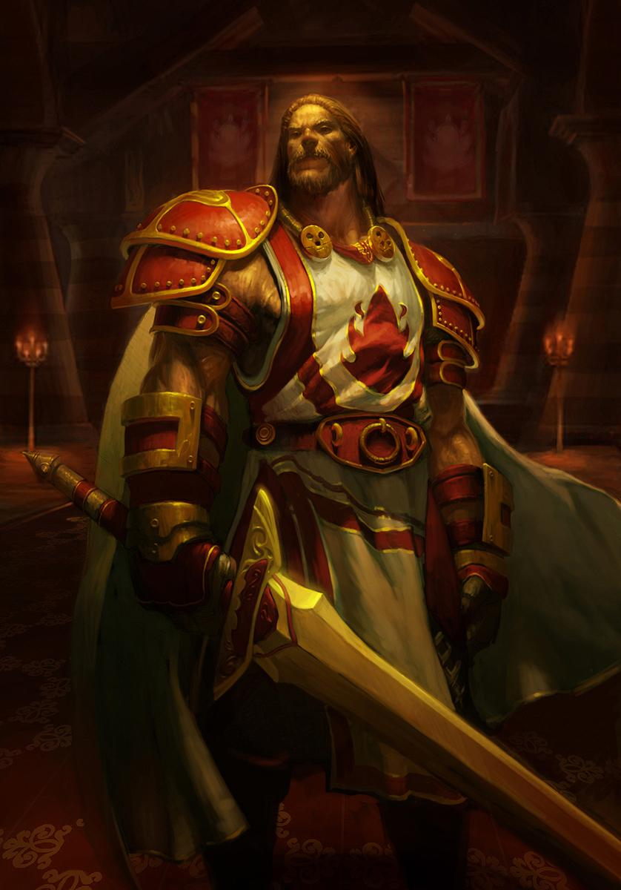
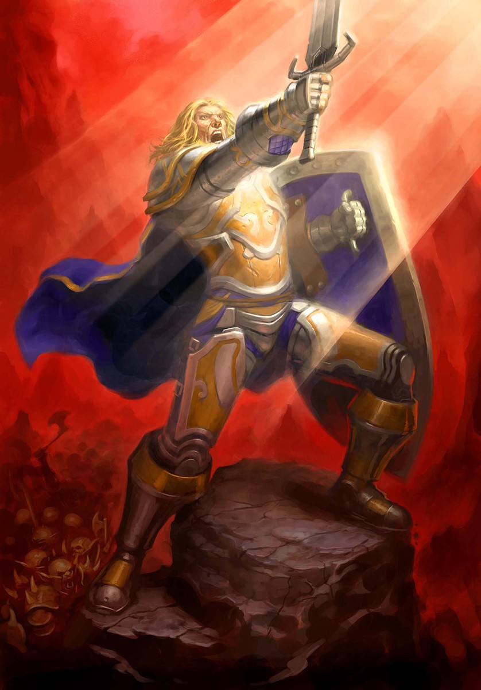

🛡 Paladin

Scarlet Champion
The Scarlet Crusade is a fanatical religious sect dedicated to the eradication of the undead from Lordaeron. Similarly to the Argent Dawn, the Crusade evolved from the Order of the Silver Hand in the aftermath of the Third War. While the Argent Dawn maintained the Silver Hand's original compassionate ideals by welcoming all races to fight the Scourge neutrally, the Scarlet Crusade devolved into a fanatical, xenophobic cult manipulated by outside forces.
Recommended Profession
Tailoring — A very modest level of skill is required to craft the Red Linen Shirt (Tailoring 40).
Challenge Rules
| Challenge | Level | Description |
|---|---|---|
| Purifier | Lv 60 | Reach Honored reputation with Argent Dawn |
| Scarlet Redemption | Lv 60 | Destroy the Scarlet Tabard at Light's Hope Chapel — renounce the Crusade |
Equipment Requirements
| Requirement | Level |
|---|---|
| Show helm | Lv 1 |
| Hide cloak | Lv 1 |
| Red shirt | Lv 10 |
| Scarlet tabard | Lv 40–59 |
| Scarlet shoulders | Lv 40 |
| Scarlet helm | Lv 40 |
| Scarlet shield | Lv 44 |
| Scarlet chestpiece | Lv 46 |
| Scarlet leggings | Lv 46 |
| Scarlet gauntlets | Lv 46 |
| Scarlet boots | Lv 50 |
Talent Requirements
| Talent | Tree | Rank | By Level |
|---|---|---|---|
| Consecration | Holy | 1 | Lv 20 |
| Redoubt | Protection | 5 | Lv 25 |
| Improved Righteous Fury | Protection | 3 | Lv 33 |
| Shield Specialization | Protection | 3 | Lv 37 |
| Blessing of Sanctuary | Protection | 1 | Lv 41 |
| Reckoning | Protection | 5 | Lv 46 |
| Holy Shield | Protection | 1 | Lv 51 |
Quest Milestones (Leaving the Cult)
| Quest | By Level |
|---|---|
| Collecting Memories | Lv 18 |
| Cleansing the Eye | Lv 30 |
| Bride of the Embalmer | Lv 30 |
| Mythology of the Titans | Lv 38 |
| Spiritual Unrest | Lv 47 |
| The Remains of Trey Lightforge | Lv 57 |
| Unfinished Business | Lv 58 |
| In Dreams | Lv 59 |

Exemplar
Battlefields are bloody places, but they are also the proving grounds of heroes. Among the many legendary feats of bravery are the deeds of the exemplars: men and women who strike fear into the hearts of their enemies through intimidation and demoralization. They also inspire courage in their allies, holding their banners high and charging into battle, shouting encouragement to those who ride beside them.
Recommended Profession
Tailoring, Blacksmithing — A very modest level of Tailoring skill is required to craft the Blue Linen Shirt. Forge the rest of your armor with Blacksmithing.
Challenge Rules
| Challenge | Level | Description |
|---|---|---|
| Faction leader | Lv 60 | Become exalted with your own faction |
Equipment Requirements
| Requirement | Level |
|---|---|
| Sword or mace | Lv 5 |
| Blue shirt | Lv 10 |
| Guild tabard | Lv 20 |
| Insignia | Lv 30 |
| Imperial helm | Lv 45 |
| Imperial shoulders | Lv 53 |
Talent Requirements
| Talent | Tree | Rank | By Level |
|---|---|---|---|
| Seal of Command | Retribution | 1 | Lv 20 |
| Conviction | Retribution | 5 | Lv 27 |
| Deflection | Retribution | 5 | Lv 29 |
| Vengeance | Retribution | 5 | Lv 39 |
| Precision | Protection | 3 | Lv 48 |
| Divine Strength | Holy | 5 | Lv 56 |
Quest Milestones (Stormwind Loyalist)
| Quest | By Level |
|---|---|
| Missing In Action | Lv 25 |
| An Audience with the King | Lv 31 |
| The Missing Diplomat | Lv 38 |
| Mai'Zoth | Lv 46 |
| The Great Masquerade | Lv 59 |
Templar
Templars are a type of paladin combatants. They are not only the most skilled in battle, but also the most righteous in their demeanor. Strength of arms and purity of mind are strict requirements.
Challenge Rules
| Challenge | Level | Description |
|---|---|---|
| Purifier | Lv 60 | Reach Honored reputation with Argent Dawn |
Equipment Requirements
| Requirement | Level |
|---|---|
| Show helm | Lv 1 |
| Sword or mace | Lv 5 |
| Guild tabard | Lv 20 |
| Argent shoulders | Lv 42 |
| Argent helm | Lv 45 |
| Argent Dawn trinket | Lv 50 |
Talent Requirements
| Talent | Tree | Rank | By Level |
|---|---|---|---|
| Divine Intellect | Holy | 5 | Lv 14 |
| Improved Seal of Righteousness | Holy | 5 | Lv 19 |
| Consecration | Holy | 1 | Lv 20 |
| Healing Light | Holy | 3 | Lv 23 |
| Divine Favor | Holy | 1 | Lv 30 |
| Redoubt | Protection | 5 | Lv 35 |
| Improved Righteous Fury | Protection | 3 | Lv 43 |
| Shield Specialization | Protection | 3 | Lv 46 |
| Holy Shock | Holy | 1 | Lv 56 |
Quest Milestones (Purging the Undead)
| Quest | By Level |
|---|---|
| Collecting Memories | Lv 18 |
| Cleansing the Eye | Lv 30 |
| Bride of the Embalmer | Lv 30 |
| Voodoo Dues | Lv 44 |
| Spiritual Unrest | Lv 47 |
| The Remains of Trey Lightforge | Lv 57 |
| The Argent Hold | Lv 60 |